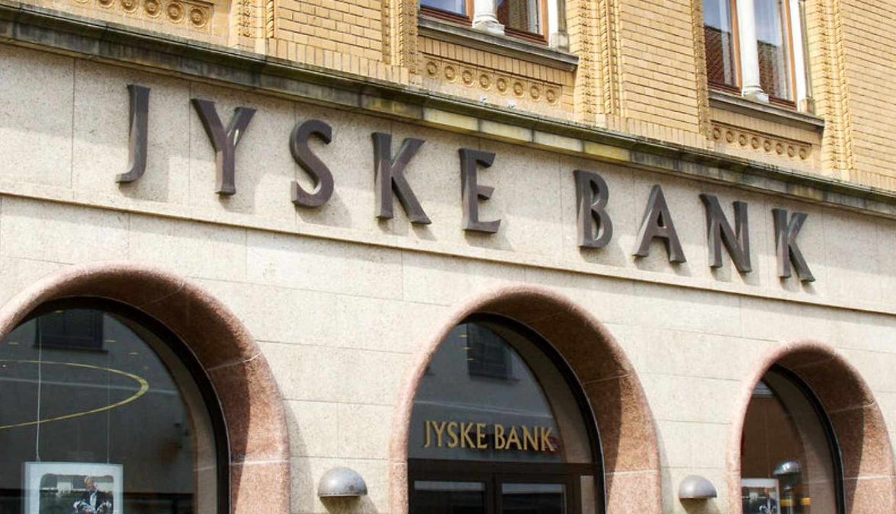

JIHMO · 2008–2016
Danmarks første gruppesøgsmål mod en ledende bank
Historien om Jyske Invest Hedge, investorernes store tab under finanskrisen og det mangeårige opgør med Jyske Bank.

550 mio. kr.Investeret i JIHMO
~80%Værditab på kort tid
~350 mio. kr.Tilbage til investorgruppen
Sagen
Fra “stabilt afkast” til et otte år langt opgør
JIHMO blev markedsført som en markedsneutral obligationsinvestering. Da finanskrisen ramte, blev den høje gearing afgørende, og investorernes værdier faldt kraftigt.
Investorgruppen organiserede sig og førte sagen videre gennem flere år. Den 13. januar 2015 meddelte parterne, at gruppesøgsmålet var afsluttet ved en forligsmæssig løsning. I 2016 blev det sidste juridiske og økonomiske punktum sat.
“Rige på erfaringer” blev et gennemgående tema – og senere afsættet for bogen om hele forløbet.


Bogen
Guld og grønne skove
Peter Beha Wagner og Torben Frigaard Rasmussen fortæller om forløbet, investorernes erfaringer og kampen for at få en væsentlig del af de tabte midler tilbage.